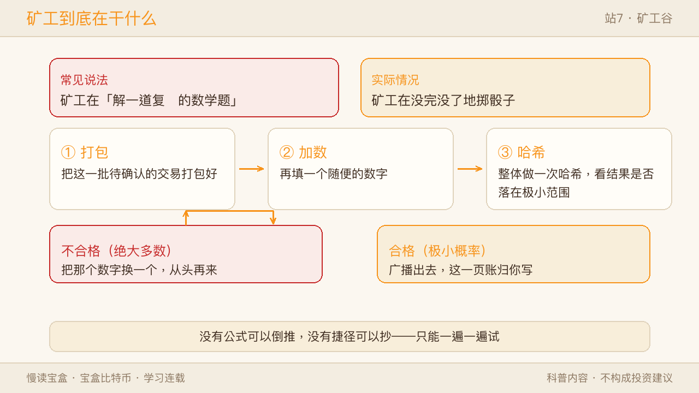
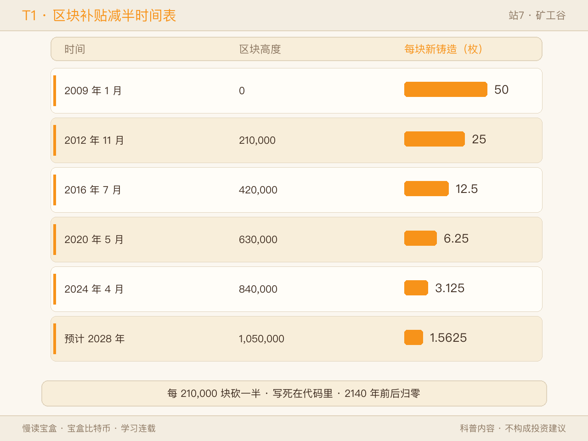
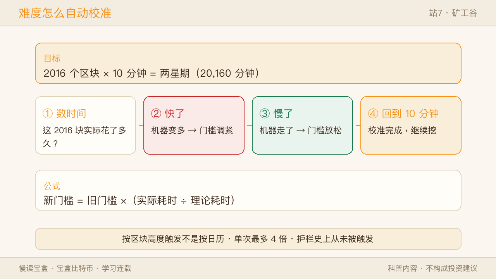
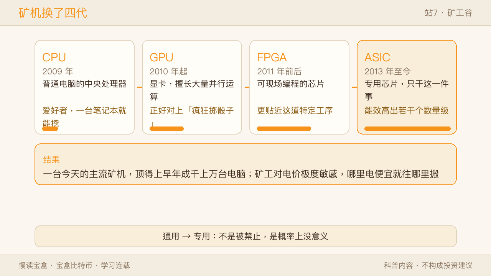
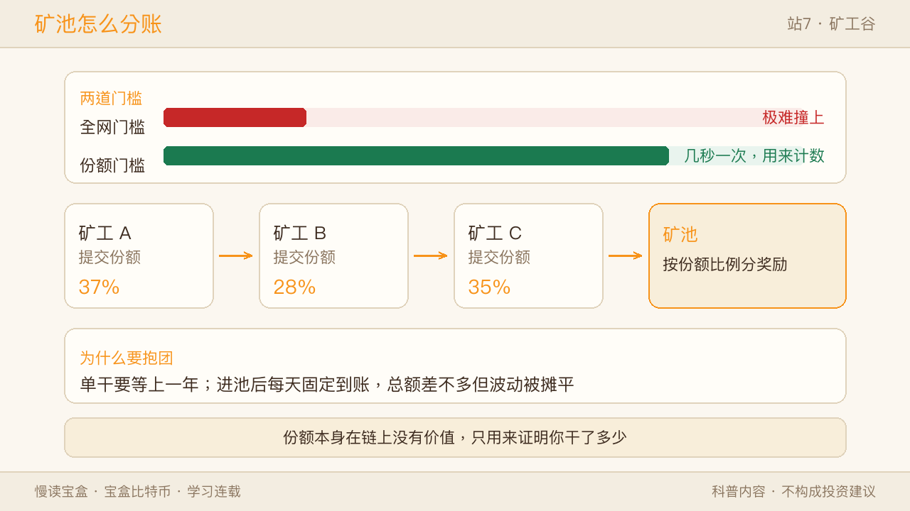
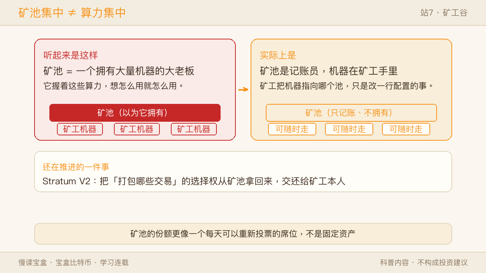
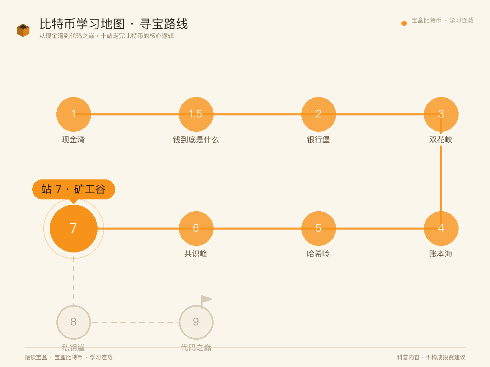

上一站我们站在共识峰顶，把"没有裁判怎么达成一致"拆完了。规则那层已经清楚：工作量投票、最重链说了算、等 6 个确认。
但整座山上有一群人始终没有露脸——那些真金白银买机器、按月交电费、日夜不停掷骰子的人。
他们不互相认识，他们互相是竞争对手。他们没有宣誓要维护网络安全，也没有签过任何"服务协议"。他们只是一群想把电费赚回来的人。
这一站我们下到山谷里，看看这群人到底在干什么、账是怎么算的、为什么算力翻了无数倍而区块还是 10 分钟一个。

一、先纠正一个印象：他们不是在"解数学题"
很多科普文章会说"矿工在解一道复杂的数学题"。这句话很有画面感，但它错得挺关键。
数学题有解法。你聪明、你方法好，你就能算得快。可比特币要的不是"算得快"，是"算得多"。
矿工真正做的事，是这样的：把这一批待确认的交易打包好，再加上一个随便填的数字，整体做一次哈希（站 5 讲过的那台指纹机），看结果是不是落在某个极小的范围里——比如前 20 位都得是 0。
不是，就把那个数字换一个再来。没有公式可以倒推，没有捷径可以抄，只能一遍一遍试。 谁试的次数多，谁就更容易撞上。
所以更准确的说法是：矿工在掷骰子，而且是一秒掷几十亿次的那种掷法。
✅ 像的地方：像一群人在同一个巨大的沙坑里找一颗指定的沙子——你没法推断它在哪，只能一把一把地筛。 ⚠️ 不一样的地方：找沙子可以靠眼力、靠经验。掷骰子完全靠运气，老手和新手在每一次尝试上没有任何差别，区别只有手速。
"手速"这个词很关键。它意味着：矿工提供的不是智慧，是已经付出的代价。 你没法假装自己掷过——每一次尝试都真真切切烧了一点电。站 6 说"把说话权换成干活权"，换的就是这个：票不是身份发的，是电换的。
二、那他们图什么：两笔进账
既然是掷骰子，就得问一句：中了的奖励是什么？
答案有两笔：
第一笔：新铸造的币。 谁掷出了合格结果，谁就有权在这一页账上记一笔"凭空产生 X 个比特币，归我"。比特币的新币只有这一个来源，2100 万的总量就是从这里一笔一笔长出来的。
第二笔：手续费。 这一页里打包的所有交易，各自带着发款人附上的手续费，也一并归出块的人。
关键是第一笔有一个写死的衰减表——每 210,000 个区块（大约四年），新铸造的数量砍一半：
| 时间 | 区块高度 | 每个区块新铸造 |
|---|---|---|
| 2009 年 1 月 | 0 | 50 |
| 2012 年 11 月 | 210,000 | 25 |
| 2016 年 7 月 | 420,000 | 12.5 |
| 2020 年 5 月 | 630,000 | 6.25 |
| 2024 年 4 月 | 840,000 | 3.125 |
| 预计 2028 年 | 1,050,000 | 1.5625 |

这条曲线没有任何人能调。它不投票、不开会、不看行情，只认区块高度。到 2140 年前后，新铸造这一项会归零，矿工只剩手续费。
顺带说一个容易被忽略的事实：到今天为止，手续费在矿工收入里的占比通常很低，只有百分之一二。 绝大部分进账仍来自新铸造的那笔。这也正是"安全预算"这个话题被反复讨论的原因——等补贴归零，光靠手续费够不够撑住这么多算力，是个开放问题，目前没有定论。
✅ 像的地方：像一条既有通行费、又有定期补贴的高速公路——补贴逐年递减，通行费得慢慢顶上来。 ⚠️ 不一样的地方：公路的补贴可以随时调整，比特币这条曲线写死在代码里，改它等于改协议，得全网节点一起同意。
三、算力涨了一百万亿倍，凭什么还是 10 分钟一个块
上一站我留了个问题："算力涨了一万倍，凭什么还是 10 分钟一个块？"其实那个说法保守了。
2009 年，全网算力大概是一台笔记本电脑的水平，每秒几百万次尝试。到今天，全网每秒的尝试次数在百亿亿次这个量级（EH/s），2025 年还一度越过更高的台阶。中间差了大约 10^14 倍——一百万亿倍。
那么问题来了：机器多了这么多，为什么不是一秒钟出一个块？
因为协议里装了一个自动校准器：
- 每 2016 个区块（按区块高度算，不是按日历），所有节点各自独立地算一次账：这 2016 个块实际花了多久？
- 目标是 2016 × 10 分钟 = 两星期。
- 实际只花了一星期 → 说明机器太多了 → 把门槛调紧一倍。
- 花了四星期 → 说明机器走了 → 把门槛放松一半。
公式就是一句话：新门槛 = 旧门槛 ×（实际耗时 ÷ 理论耗时）。

还有两个细节值得知道：
一是这个调整有护栏。 单次最多调 4 倍，最少也要留 1/4——防止某一天大批矿场突然停电，难度一落千丈。有意思的是，这道护栏在比特币历史上从来没被触发过；最大的一次下调是 2021 年 7 月的约 -28%。
二是它有个极小的小毛病。 代码里算时间差时用的是首尾两个块的时间戳，实际只覆盖 2015 个间隔，却除以 2016 个间隔的理论时长，于是平均出块时间会比 10 分钟略长一点点（约 0.05% 的偏差）。要修它得动协议，所以一直留着。
✅ 像的地方：像一台会根据跑的人多少自动调坡度的跑步机——上来的人多，坡度就变陡，谁也别想跑快。 ⚠️ 不一样的地方：跑步机的感应器可能失灵；这个校准器是每个全节点各自算一遍、必须算出同一个数，谁算错了就会被网络丢下，没有"中心控制器"可以舞弊。
四、机器换了四代：从人人可挖到专用机
既然比的是手速，那"手"本身就会进化。
- 2009 年：CPU。 普通电脑的中央处理器，一台笔记本就能挖。那时候参与者是爱好者。
- 2010 年起：GPU。 显卡原本为画图设计，擅长并行做大量简单运算，正好对上了"疯狂掷骰子"这件事，效率一下高出一截。
- 2011 年前后：FPGA。 可以现场编程的芯片，比显卡更贴近这道特定工序。
- 2013 年至今：ASIC。 专用芯片，除了做这一件事什么都干不了，但做这件事的能效比通用芯片高出若干个数量级。

这条路线带来一个必然结果：今天一台主流矿机，顶得上早年成千上万台电脑。 于是"用家里闲置电脑挖"这件事在比特币上早就不再现实——不是被禁止，是概率上没意义。
这也顺带解释了另一个现象：矿工对电价极度敏感。因为他们的核心成本就是电，谁能找到更便宜的电，谁就能多撑一会儿。于是你会看到矿场追着水电、风电、被浪费掉的伴生气跑，哪里电便宜就往哪里搬。
✅ 像的地方：像从徒手挖土到开挖掘机——工具越专用，效率越高。 ⚠️ 不一样的地方：挖掘机还能去干别的活；ASIC 除了掷这种特定骰子，基本就是一块发热的砖头，这也意味着矿工很难转产，一旦决定干就得干到底。
五、为什么大家都抱团：矿池与"份额"
现在一个很现实的问题来了：全网每秒百亿亿次尝试，你一台机器每秒几十万亿次——你中下一个块的概率，大约只有几百万分之一。
按这个概率，一台机器单独挖，等上一年量级才可能撞上一个。中间一分钱进账都没有。
这对任何人来说都是没法接受的节奏。于是有了矿池。
矿池做的事其实很好理解：大家把机器接进来，一起试；任何一个人撞上了，奖励按每个人贡献的量分。 收入从"很久一次的大奖"变成"每天稳定到账的小钱"，总额差不多，但波动被摊平了。
那"贡献的量"怎么算？靠份额（share）。
矿池给每台机器发一个比全网门槛低得多的临时目标。你的机器撞上这个低目标，就提交一份记录——这就是一份份额。份额本身在链上没有任何价值，它的用途只有一个：向矿池证明我确实在干活，干了多少。

✅ 像的地方：像一群人合买彩票——一个人的中奖概率小得可怜，一百人凑钱买一百张、说好平分，每个人拿到手的频率就高多了。 ⚠️ 不一样的地方：彩票合买靠的是彼此信任和一张纸上的约定；矿池的份额是数学凭证，矿池赖不掉你的量，也看不到你的私钥，你的币从头到尾没交给它保管。
六、常见误解：矿池集中，不等于算力集中
你可能看到过一个说法："前几大矿池占了全网七成以上算力，比特币已经中心化了。"
这个担忧值得认真对待，但算力集中和矿池集中是两件事。

| 常见说法 | 实际情况 |
|---|---|
| 矿工在"解数学题" | 在猜数，没有公式可倒推，只能一遍遍试 |
| 矿池掌握了这些算力 | 矿池是记账员，机器在矿工手里，换个池只是改一行配置 |
| 矿工能决定规则 | 矿工只负责提议，裁决权在每个全节点手上（站 6 讲过） |
| 挖矿耗电是设计失误 | 耗电正是"篡改很贵"的来源，不是副作用而是机制本身 |
关键在于第二行：矿池不拥有任何一台机器。
矿工把机器指向哪个池，随时可以改。如果某个矿池开始做手脚——比如偷偷审查交易、或者试图重组区块——矿工要做的只是把地址换掉，几分钟的事。所以矿池的份额更像一个每天可以被重新投票的席位，而不是一份固定资产。
这不是说风险不存在：如果几个大池同时出问题，短期内的确会难看。所以社区一直在推一件具体的事——把区块模板的选择权从矿池手里拿回来，交还给矿工本人（业内叫 Stratum V2）。这一步走完，矿池连"决定打包哪些交易"的权力都会变小。
✅ 像的地方：像工会——工人抱团才有议价能力。 ⚠️ 不一样的地方：工会可以锁人、可以处罚不服从的成员；矿池锁不住任何人，矿工走的成本几乎为零。这是它和传统组织的根本区别。
七、烧电这件事到底怎么看
最后聊一句绕不开的话题：耗电。
先说机制层面。耗电不是设计失误，它就是设计本身。 站 6 讲过，比特币的安全性来自"改历史要重做一遍全网的工作量"。工作量是用电换的。如果有一天"投票"变得不需要成本，那伪造一份历史也就不需要成本了——账本立刻就不值钱了。所以从协议的角度看，电不是被浪费掉的，电是被换成了一份不可篡改的记录。
再说现实层面。公开估算把全网年耗电放在150–200 TWh 这个区间，量级和一个中等国家相当；其中可再生能源的占比估计在一半上下。这个数字不小，谈它不需要回避。
但有一个属性常被漏掉：矿工是极少数可以"说停就停"的用电大户。
用电高峰时电网吃紧，矿场可以在几秒钟内把负荷降下来，把电让给居民和医院；等电网宽裕了再开起来。对电网来说，这种随时可调的负荷是有价值的——风、光这类发电不稳定，正需要有谁能把多余的电吃掉、又能在缺电时立刻让出来。
✅ 像的地方：像保险柜的重量——沉，是为了防搬走，不是为了好看。 ⚠️ 不一样的地方：保险柜的重量是死的；矿场的负荷是活的，它还能反过来帮电网削峰填谷。
这里不做价值判断，也不替任何人下结论。你只需要知道两件事：耗电是这套机制的代价，而代价本身正是它的防护层；至于这个代价值不值，是每个人自己的判断。
八、回到地图（启下私钥崖）
回到这张 10 站学习地图——站 1 现金湾见了比特币是什么；站 2 银行堡看清它要取代什么；站 3 双花峡看它怎么按住双花；站 4 账本海看它用什么承载这笔账；站 5 哈希岭拆开造指纹的机器；站 6 共识峰讲清没有裁判时怎么收敛；本站矿工谷，我们把镜头从规则移到了人身上——他们掷骰子、算电费的账、靠自动校准的门槛维持 10 分钟、抱团进矿池，而抱团并不等于被谁控制。

还有一件事他们做不到，而且永远做不到：花别人的币。 因为那需要一样东西——对方的私钥。那串字符不在矿工手里，不在矿池手里，也不在任何服务器上，它只在一个人手里。
下一站「私钥崖」，我们去看看那串字符到底意味着什么。
三句话带走本篇：